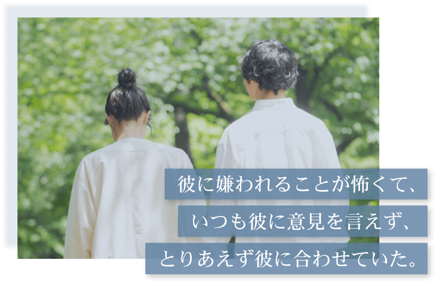
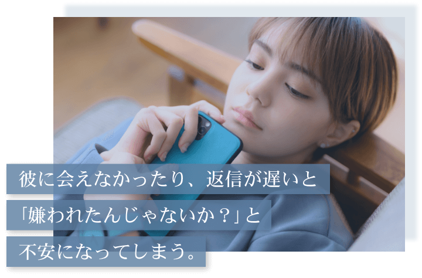
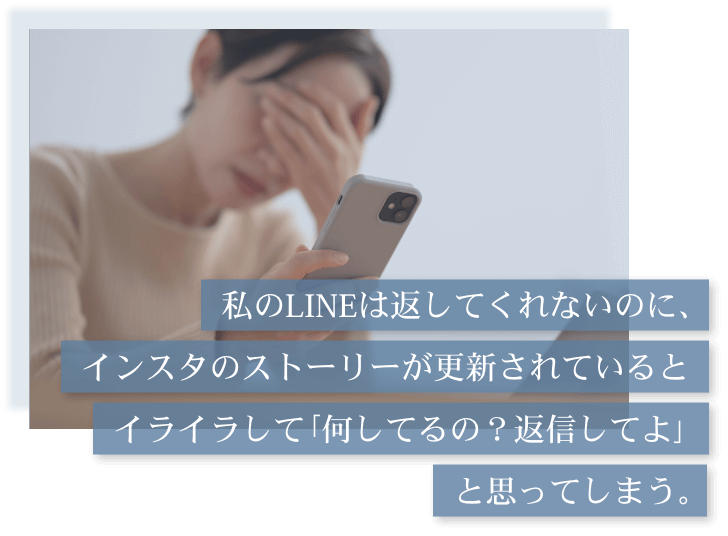
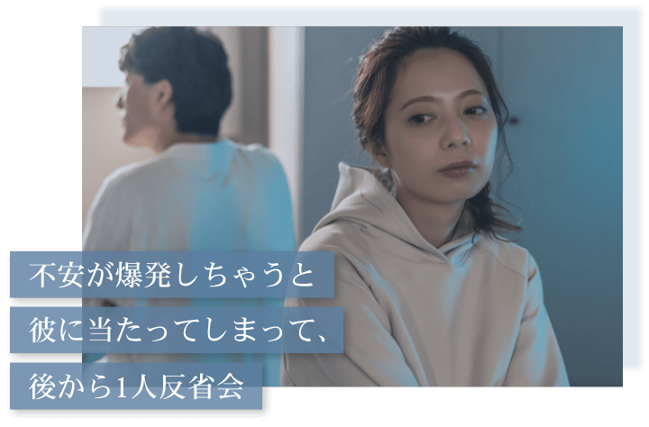
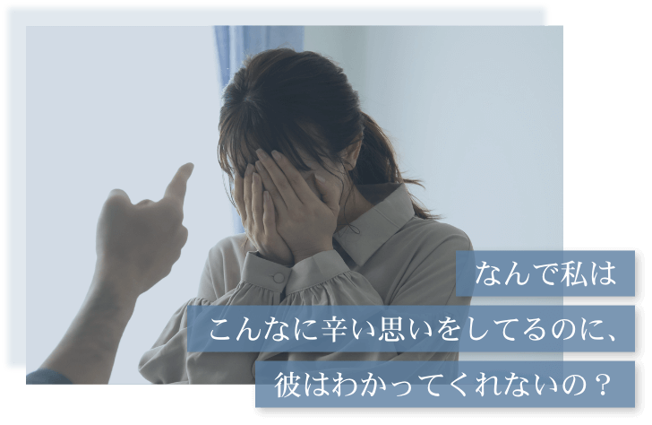
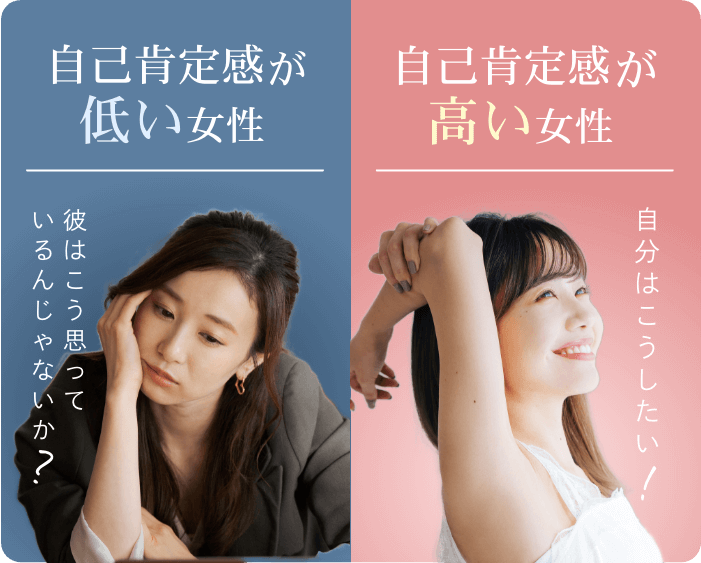
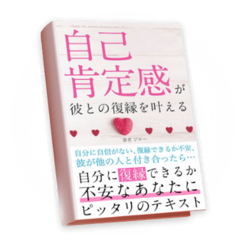
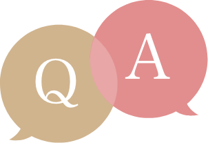

彼と付き合ってる時、
こんな不安は
なかったですか？





彼と会えないときに
不安になっちゃう
彼が楽しんでいるSNSを見ると
心の中がモヤモヤしたり
「私は寂しい思いしてるのに
なんで彼だけ…」
とLINEの返信を急かしてしまう
そんな小さな気持ちのズレが積み重なり
彼との関係についに終わりがきてしまった
そんなあなたに向けて配信しています
彼に当たってしまって
一人で大反省
今になって冷静に考えてみれば
彼だって仕事が忙しかったのかも
しれないし
彼のあの時の行動も別に私の事が
好きじゃなくなった訳では
なかったのかも…
そんな風に
「過去」の自分の行動を反省して
大好きな彼と復縁するために
「現在」の自分の行動を変えようと
思っているんですよね？
そんなあなたが彼と復縁するために
学ぶべきなのは自己肯定感の上げ方です！
「自己肯定感…？？」
どこかで言葉だけは聞いたことがある人も
いると思います。
自己肯定感が低いと
不安に襲われる…
私のことが好きじゃ
なくなったのかも…
離れてしまっている気がする…
いつかいなくなると
思ってしまう…
あなたはこんな「不安」を
感じたことありませんか？
人は不安を感じると、
ついネガティブな考え方ばかりして
どんどん物事を悪い方向に
考えてしまいます。
実は自己肯定感が低い女性ほど
自分に自信がなく
不安に襲われやすいんです。
不安に襲われないためには
「彼はこう思っているんじゃないか？」
ではなく
「私はこうしたい」
と考えることが重要なんです。
このように
「彼目線」ではなくて「自分目線」で
物事を考えれば、
悪い妄想ばかりすることなく
不安な気持ちを
コントロールする事ができます。
自己肯定が高い女性ほど
このように自分に矢印を向けて
物事を考えることができるので
「彼はどう思ってるのか？」よりも
「自分はどうしたいか」と自分の気持ちを
素直に受け入れることができるんです。

そんな復縁に必要な
自己肯定感の高め方を
1冊のテキストにまとめました!

厳選した
99ページで
復縁方法を
徹底解説
最短14日で
復縁成功の
実績あり
2800名
以上の方が
受け取り済み
（2024/09月現在）
復縁成功者の声
テキストの内容
1章
絶対にNG！
彼が100%離れる
最悪の言葉
彼と別れたあとって
どうしても早く復縁したいって
焦ってしまいますよね…
でも実はその焦りこそが
あなたの復縁を失敗させる
原因だったりするんです。
せっかくあなたが時間をかけて
改善した彼との関係をムダな時間に
しないためのテクニックを
詳しく解説します
2章
知らないと
復縁は絶対にムリ
彼との正しい冷却期間
もし冷却期間を過ごす時に
彼にいつ連絡したらいいのか？
で悩んでいるなら要注意です。
今のあなたは
冷却期間の正しい過ごし方を知らずに
彼との復縁が失敗してしまう方向に
進んでいます。
ネットには載っていない
本来のあなたが取るべき
正しい冷却期間について
具体的な方法までを解説しています。
3章
〜もう悩まない〜
彼に彼女がいても
復縁できる極意
彼に新しい彼女がいると
復縁を諦めてしまう女性が多いですが
実は諦める必要はないんです。
彼に別の彼女がいたとしても
あなたの隣で笑っている未来を
手に入れる状態になる方法を
僕が厳選した内容なので
同じ状況で復縁を諦めそうな人は
ぜひ知っておいてください。
4章
え？これだけでいいの？
彼が返したくなる
魔法のLINEテク
「久しぶり！元気だった？」
というLINEを彼に送るだけでも
実は
復縁するために意識すべきポイントが
いくつもあるんです。
なので「これだけは知って欲しい！」
という内容を考えに考え抜いて
盛り込んだ内容なので
知っておいて100%損する事は
ありません。
今日からでも使えるLINEテクを
惜しむ事なく全部お伝えしています。
5章
これで不安は解消！
彼と復縁できる
とっておきの方法
今の私でも本当に復縁できるか不安。
この悩みが
あなたの頭の中にあるうちは
彼の気持ちは戻ってきません。
「私なんて…」と
自分に価値を感じなかったり
不安を感じやすい原因と
「やっぱりあいつがいい」と
彼が復縁したいと思う
女性の考え方になるための
内面改善の方法を
分かりやすく解説しています。
受け取り方法
復縁テキスト
受け取り特典
さらに今だけ
僕の公式LINEを追加してくれた方限定で
あなたの復縁の成功率を高めるために
追加で4冊の実践テキストを
特別にお渡ししています！
この特典はいつ終了するか分からないので
せっかくなら特典がついている今のうちに
受け取っておいて下さい。
自己肯定感が低い原因は
「過去の経験」
自己肯定感の低さは
過去の経験に大きく影響されています。
例えば僕がサポートしている方には
このような経験をしていた方がいました…
- 感情的な母親の
機嫌を損なわないように
いつも顔色を気にしていた - 「あの子はできるのに
なんであなたは…」と
両親からいつも姉妹と比較されて
自分の欠点ばかり気にしてた - 学生時代に周りからいじめられて
「私って何か悪い事したのかな」
といつも自分を
責めてしまっていた - ある日突然
仲の良いグループからはぶかれ、
「おはよう！」と声をかけても
無視されるようになった
このような経験や
それに近しい経験をしていると
自分でも気づかないうちに
自己肯定感が低くなってしまうんです。
今からでも
自己肯定感は高められる
だったら過去に
自己肯定感が下がる経験があった人は
「復縁はもう無理なんですか…？」
と疑問になると思いますが
そんな事は一切ないです。
今からでも
ネガティブな考え方を
根本から変えて
自己肯定感を高めていく方法は
ちゃんと存在します。
過去の出来事を振り返ったり
自己肯定感が下がった原因を認識する事が
自己肯定感を高める最初の1歩になります。
他にも自己肯定感を高めるためのワークや
復縁への具体的な活かし方なども
テキストに記載しています。
とはいえ、
怖くてなかなか行動できない
ここまでの内容を見て
僕に相談してみたいって
思ってくれた方もいると思います。
ただそれでもやっぱり
まだ怖くて1歩が踏み出せないですよね…
その気持ちは痛いほどよく分かります。
あなたが今感じている”怖い”にも
いろんな意味で怖いと
思っているはずなので。
- 「戻ることはない」
って言われてるから怖い… - 復縁できる
イメージが湧かないから
怖い… - 自分はネガティブだし、
また傷つくのが怖い… - そもそも復縁って
ほんとにできるの？ - LINEもブロックされて
拒否られてるよ？ - アドバイザーに
頼ったことないから
怖い…
復縁のために頑張りたいけど、
いざ何かしようとしても
復縁できるイメージがつかなくて
もう諦めるしかない…
って思う気持ちもすごくわかります。
自分に自信はないし
彼にしつこくすがってしまって
重たいと思われてるから
これ以上彼に嫌われるのは
絶対に避けたいですよね。
仮にその不安を乗り越えても
ぶっちゃけ僕が誰かわからないし、
”アドバイザー”って人に
頼ることすらしたことないから
どうなるのかも想像つかない
しかも彼との状況が最悪だから
「復縁は無理なんじゃないか、、、」
と思ってしまう
あなたの気持ちはすごくわかります。
でも、1つだけ言えるのは
復縁できた女性もあなたと同じ
不安や恐怖を感じていたということ
初めからこのような
不安や恐怖が
ゼロな人はいません
少なからず
僕が何十人・何百人と
話してきた中には1人もいませんでした。
全員がなにかしらの不安を抱えて
僕を頼ってくれたんです。
そして、数ヶ月後には
そんな女性たちでも
幸せをつかんでいます！
「あの時勇気を出してたら…」と
あなたに後悔して欲しくありません。
小さな勇気がこの後の大きな幸せに
繋がるかもしれません。
ひとりで抱え込まずに
もっと周りを頼ってください！
不安な気持ちはあるけど、
「それでも今の状況を変えたい！」
と思う方は
まずはお話だけでも聞かせて下さい。
ジローの活動理由
ちなみに僕はこの活動を通して、
誰かを支えて
その人の幸せを取り戻したことで、
心から感謝されることに
すごくやりがいを感じています
でも正直そのやりがいのためだけに
活動している訳ではありません。
あまり言っていないですが
ぼくがこの活動をしている
もう１つの大きな理由を伝えると
実はぼくには
カフェを出店したいっていう
大きな夢があります
「カフェと復縁って関係ある？」
って思うかもしれませんが
ぼく自身も
過去の恋愛を誰にも相談できなくて
苦しい思いをたくさんしたので
そんな思いの女性を
1人でも減らせる場所が欲しいと
本気で思っています！
いくら友達がいるからと言っても
復縁の話ってなかなか周りにしづらい
ですよね…？
かと言って、結婚相談所のような
形式ばった場所だと
なかなか自分の本音や不安を話すのに
抵抗がありますよね。
だから同じ悩みや境遇の仲間達と
気軽に話し合える場所や空間が
必要だと思うんです。
カフェならふらっと立ち寄れるし
明るい雰囲気なので変に重くならず
自分の本音も言いやすいですよね。
そんな素敵なカフェを作るために
僕は時間もお金も費やしているわけです！
なので
あなたの復縁を僕が支えながら
あなたにも僕の夢を一緒に支える
仲間になってほしい！
そして実際にカフェができたら
僕の相談者さん限定で
オープニングイベントに
ご招待する予定です！！
一緒に復縁を頑張りながら
辛かった過去の話や幸せな未来の話を
みんなで沢山しましょう！

Q
お金はかかりますか？
A
今回お渡しするテキストに関しては
完全無料です！
ただ本気で彼と復縁したい女性
に向けては
有料での個別サポートも
存在します！(現在は満席)
Q
こんな私の状態でも
復縁できますか？
A
過去のあなたは一切関係ないです。
今のあなたが変わる気持ちさえ
持っていれば大丈夫です。
Q
今までたくさん
やってきた
私でも
変われますか…？
A
今まで色々頑張ってきた
あなただからこそ
「正しいやり方」さえ
知ることができれば復縁はできます。
ただ全て丸投げだと
復縁できる確率は下がるので
あなたも一緒に
成長していきましょう。
Q
正直自分が変われる
自信が
ありません…
A
1人で変わろうとしなくて
全然Okです！
むしろ独学で復縁しようとする人ほど
失敗しがちなので
どんどん相談して下さい。
Q
私の彼は
こんなタイプですが
復縁できますか…？
A
相手の方の性格が
頑固やプライドが高いなど
様々なパターンの復縁を
成功させてきました。
あなたとお相手の状況に合わせて
アドバイスすることも可能です。
Q
どれくらい確実に
復縁できますか…？
A
今まで
数多くの方を復縁させてきましたが、
このテキストを受け取るだけで
復縁できた訳ではありません。
次に用意している
実践テキストを受け取り
ワークを実際にこなしていく事で
復縁の可能性を最大化できます。
Q
テキストを受け取る
だけで
復縁できますか？
A
100%できるとは断言できません。
でも可能性をあげる方法は
お伝えします。
今までずっと1人で悩んだり
辛い思いをしていた分
これからはいつでも僕に相談してください。
最後にひとことだけ
いいですか？
では最後に、ここまで
読んでくださったあなたに
ぼくの本音を話して
終わりにしようと思います。
正直、みなさんも
気になっていると思いますが
ほんとに復縁できるの？
って不安が一番大きいですよね。
そしてそれに対して僕は
”100％復縁できる”なんて
無責任なセリフは言えません
正直、僕だって100％の答えのない
復縁活動に日々悩んでいます。
できることなら
100%誰でも復縁できる
魔法のような方法があれば知りたいです。
でも僕は全員が
100%復縁できる方法は知らなくても
1人1人のお話を聞いた上で
復縁の成功率を
100%に近づける方法は知っています
これまで数多くの女性を復縁させた
パターンを経験してきて
この別れ方や彼の態度・反応などから
ある程度成功までの法則を熟知しています。
僕があなたの復縁を
全力でサポートするので
「今の自分から変わりたい」
「彼と本気で復縁したい」
そう思える方だけぜひ受け取ってください
後悔させない自信はあります
これがラストチャンスなので、
お受け取りください🌱
彼と笑って過ごせる未来を
手にいれた女性の1人に
”あなた”がいることを
心から楽しみにしてます！
復縁アドバイザー ジロー